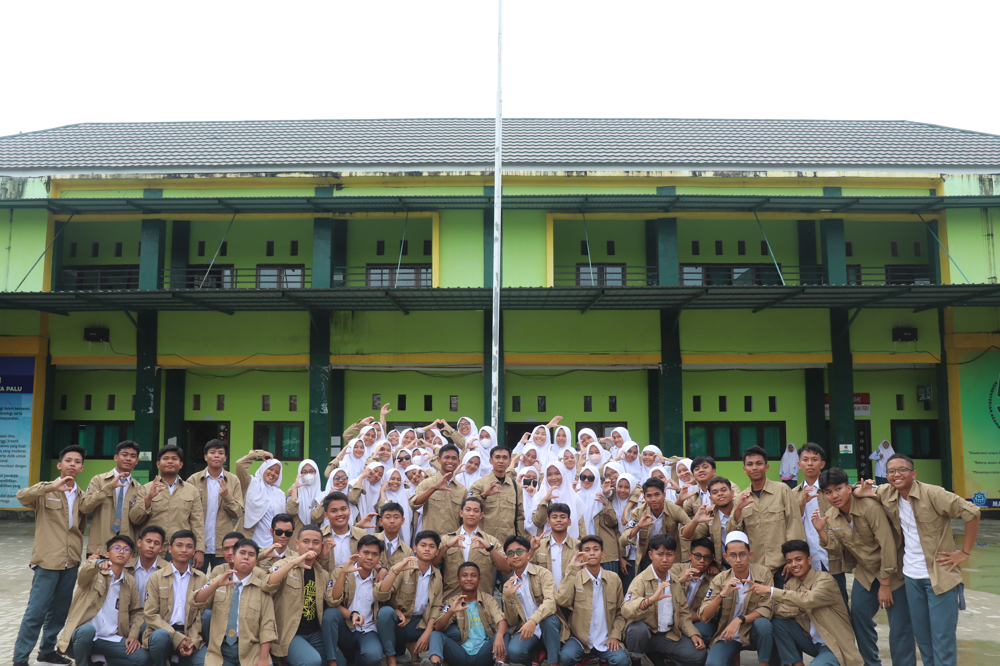
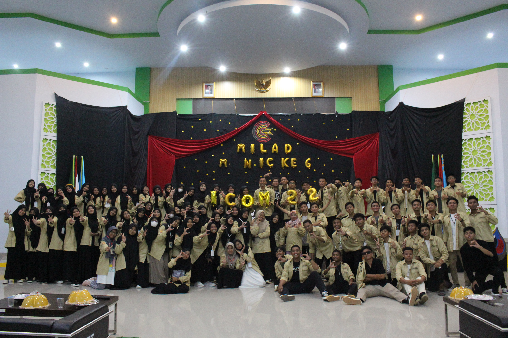
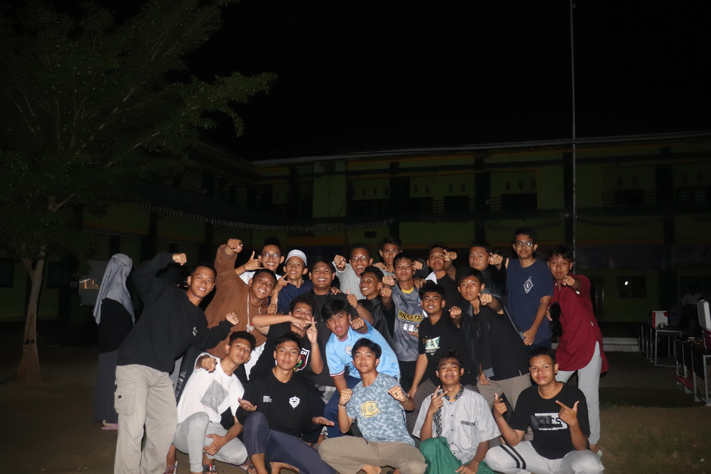

Madrasah Aliyah Negeri Insan Cendekia (MAN IC) Angkatan ke-5 dengan nama Calfèsena (Cadudasa La Fermetè Surendra Nayaka) menggambarkan sebuah komunitas pendidikan yang kuat dan penuh semangat dalam menaklukkan ilmu pengetahuan. Nama "Calfèsena" sendiri mengandung makna mendalam sebagai "prajurit penakluk bintang", mencerminkan tekad siswa-siswa untuk mencapai prestasi tertinggi dalam bidang akademik dan spiritual. Madrasah ini menjadi pusat pembelajaran yang menyediakan pendidikan berkualitas tinggi, menggabungkan nilai-nilai keislaman dengan pendidikan umum yang komprehensif. Siswa-siswa Angkatan ke-5 di MAN IC Calfèsena dikenal sebagai individu-individu yang berdedikasi tinggi, cerdas, dan memiliki semangat juang yang kuat dalam mengejar impian mereka. Dengan fasilitas modern dan kurikulum yang terus berkembang, MAN IC Calfèsena tidak hanya menekankan pada keunggulan akademik tetapi juga pada pembentukan karakter yang kuat dan penerapan nilai-nilai moral dalam kehidupan sehari-hari. Setiap anggota dari Calfèsena diharapkan untuk menjadi pemimpin masa depan yang tidak hanya kompeten secara intelektual tetapi juga berkomitmen untuk memberikan kontribusi positif bagi masyarakat dan umat manusia secara luas.

Gallery Photo

HARI SANTRI 2021

YEARBOOK

PERAYAAN MAULID 2023

PEMBAGIAN BAJU ANGKATAN

ICOM 2022

Movie One Night